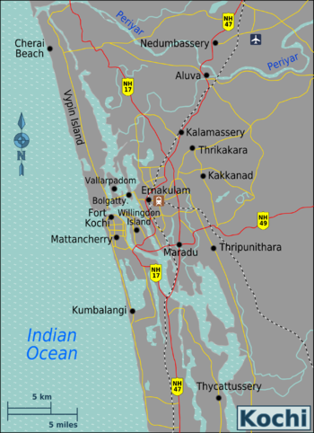

The beautiful city of Kochi in Kerala, which is also known as Cochin or Ernakulam
Situated on the south-west coast of India.
the city is the financial, commercial and industrial capital of Kerala.
"The city has the nickname Queen of the Arabian Sea, since it used to be a very important spice trading centre that connected to the Arab traders, way before the Islamic era in India."
A gaggle of islands interconnected by ferries, this cosmopolitan town has upmarket stores, art galleries and some of the finest heritage accommodations. In a true vintage-meets-future fashion, pubs, restaurants, shopping hubs and futuristic stores crowd Ernakulum, Jew Town and Fort Kochi while palaces, beaches, temples and heritage sites marking their presence too.
Fort Kochi used to be part of the Kingdom of Kochi and therefore, bears the heritage of Jews, the Dutch and the Portuguese in the form of relics and markets. It used to be a hub of trade with traders from as far as Europe and China.
Kochi forts is one of the best place for shopping arts and enjoy the culture of kerela
You can hire a houseboat and enjot the sunset in it with you friends and family. The houseboat has great food to enjoy and a small DJ in it so you can dance and enjoy the moment
Watching sunset on the houseboat is one of the most beautiful moment i had in kochi
Marine Drive of Kochi is a popular place of hang-out, mainly for the youngsters of Kochi. Here vehicles are not allowed on the pathway. Facing the backwaters, Marine Drive is lined with many shopping malls, restaurants, etc. You can either walk down the beautiful Marine Drive on a quaint evening while watching the sunset or indulge in shopping and finishing it with a meal
Kochi- Lulu Mall, Asia’s largest shopping mall has become the hottest shopping destination of the city.